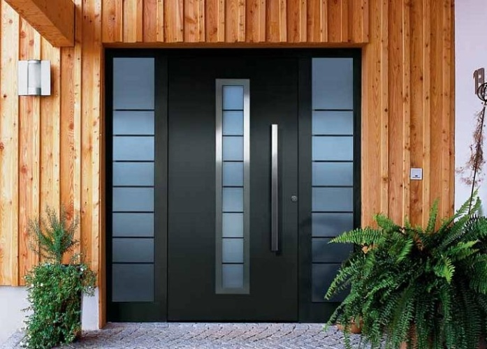

Двері
Двері СОКІЛ створені з найбільш високоякісних матеріалів, які повністю відповідають світовим стандартам. Завдяки цьому приміщення стають більш комфортними для роботи та проживання. Великий вибір різних дверей виробника дозволяє підібрати ідеальний варіант для кожного приміщення або будівлі.
Металопластикові вхідні двері.
Перевагою металопластикових вхідних дверей є надійність, довговічність і високі показники енергозбереження. Якщо Ви хочете двері з оригінальним дизайном, «СОКІЛ» пропонує найширший вибір ексклюзивних дверей. Ламінація профілю в різні кольори і текстури, вітражі, декорація склопакетів фацетами, гнуті імпости і ексклюзивні форми дверей допоможуть втілити в життя Ваші ідеї по дизайну.
Алюмінієві вхідні двері
Основною особливістю алюмінієвих вхідних дверей — є можливість виготовляти конструкції великих розмірів за рахунок високої міцності алюмінієвих профілів.
Залежно від наявності терморозриву алюмінієві вхідні двері діляться на «теплі» та «холодні».
Алюмінієві вхідні двері, мають більший строк експлуатації завдяки високій міцності металу, крім того, вони не піддаються горінню.
«СОКІЛ» пропонує широкий вибір декору алюмінієвих вхідних дверей. Залежно від бажання клієнта, профіль може бути пофарбований в будь-який колір по таблиці RAL.
Що стосується склопакетів, то для них доступні ті ж варіанти декорування, що й у металопластикових дверей.

Металеві вхідні двері
Вхідні металеві двері надійно захистять Ваш будинок. Високий рівень міцності, різноманітність дизайнерських рішень, довговічність і естетичність — все це поєднують в собі металеві вхідні двері від «СОКІЛ».
Наші металеві двері пофарбовані якісною молотковою фарбою, доступною в декількох кольорах. Вулична сторона дверей декорується MDF накладками з ламінацією під дерево.
Металеві двері відмінно забезпечать не тільки захист Вашого будинку від сторонніх осіб, але також збережуть тепло в будинку і не дадуть проникнути всередину волозі, холоду та пилу.
Металопластикові міжкімнатні двері.
Компанія «СОКІЛ» виготовляє міжкімнатні металопластикові двері з німецького профілю REHAU ECOSOL 60. Двері з даної профільної системи відрізняються доступною ціною, якістю, вологостійкість, звукоізоляцією і великим вибором декорів. Металопластикові міжкімнатні двері з профілю REHAU ECOSOL 60 відмінно підійдуть для мед. установ, підсобних приміщень, ванних кімнат і споруд з частковим опаленням.
Також ми пропонуємо своїм клієнтам широкий асортимент декорів дверей, більше 20 основних кольорів по таблиці RAL.
Для вас не складе труднощів підібрати потрібний колір профілю.
Алюмінієві міжкімнатні двері
Алюмінієві міжкімнатні двері часто використовуються в торгових центрах, мед. установах, офісах і адміністративних будівлях. Зараз все більше людей ставлять такі двері у себе вдома , і це неспроста.
Завдяки високій міцності алюмінієвих дверей їх можна виготовляти у великих розмірах, при цьому конструкція буде міцною і жорсткою.
Також двері можуть виготовлятися не тільки в класичному варіанті, а й як розсувні. Це дозволить заощадити місце для відкривання і збільшити отвір.
За бажанням клієнта, алюмінієві двері можуть бути пофарбовані в будь-який колір по таблиці RAL.
Скляні міжкімнатні двері
Міжкімнатні скляні двері — це справжній витвір мистецтва, втілене в інтер’єрі. Вони поєднують в собі витончену розкіш силуетів, витонченість ліній і елегантність форм, дозволяють візуально збільшити навколишній простір, зробити його легким і повітряним. Сучасні моделі виробляються з загартованого скла, витримують різкі перепади температур, відрізняються надійністю і високою міцністю.
Ми пропонуємо широкий асортимент моделей, оперативне оформлення замовлення і безкоштовні консультації фахівців.